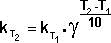
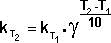
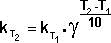
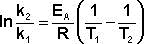

Влияние температуры на скорость химической реакции. Уравнение Аррениуса. Энергия активации и определение ее по экспериментальным данным.
Каждая молекула сталкивается с другими. Число соударений в секунду столь огромно, что, если бы столкновения были эффективны, все реакции заканчивались бы мгновенно, т.е. протекали бы в виде взрыва. Но этого не происходит. Сильное понижение температуры реагирующей системы молекул приводит к уменьшению их кинетической энергии, и их столкновения становятся неэффективными, а скорость реакции близка к нулю.
Зависимость скорости реакции от температуры определяется правилом Вант-Гоффа:
Константа скорости реакции есть функция от температуры; повышение температуры, как правило, увеличивает константу скорости. Первая попытка учесть влияние температуры была сделана Я. Г. Вант-Гоффом, который сформулировал следующее эмпирическое правило:
При повышении температуры на каждые 10 градусов константа скорости элементарной химической реакции увеличивается в 2 – 4 раза.
Величина, показывающая, во сколько раз увеличивается константа скорости при повышении температуры на 10 градусов, есть температурный коэффициент константы скорости реакции γ. Математически правило Вант-Гоффа можно записать следующим образом: 
Правило Вант-Гоффа является приближенным и применимо лишь для ориентировочной оценки влияния температуры на скорость реакции. Температура влияет на скорость химической реакции, увеличивая константу скорости.
Однако правило Вант-Гоффа применимо лишь в узком температурном интервале, поскольку температурный коэффициент скорости реакции γ сам является функцией от температуры; при очень высоких и очень низких температурах γ становится равным единице (т.е. скорость химической реакции перестает зависеть от температуры).
Уравнение Аррениуса
Очевидно, что взаимодействие частиц осуществляется при их столкновениях; однако число столкновений молекул очень велико и, если бы каждое столкновение приводило к химическому взаимодействию частиц, все реакции протекали бы практически мгновенно. С. Аррениус постулировал, что столкновения молекул будут эффективны (т.е. будут приводить к реакции) только в том случае, если сталкивающиеся молекулы обладают некоторым запасом энергии – энергией активации.
Энергия активации есть минимальная энергия, которой должны обладать молекулы, чтобы их столкновение могло привести к химическому взаимодействию.
Рассмотрим путь некоторой элементарной реакции
А + В ––> С
Поскольку химическое взаимодействие частиц связано с разрывом старых химических связей и образованием новых, считается, что всякая элементарная реакция проходит через образование некоторого неустойчивого промежуточного соединения, называемого активированным комплексом:
А ––> K# ––> B
Образование активированного комплекса всегда требует затраты некоторого количества энергии, что вызвано, во-первых, отталкиванием электронных оболочек и атомных ядер при сближении частиц и, во-вторых, необходимостью построения определенной пространственной конфигурации атомов в активированном комплексе и перераспределения электронной плотности. Таким образом, по пути из начального состояния в конечное система должна преодолеть своего рода энергетический барьер. Энергия активации реакции приближённо равна превышению средней энергии активированного комплекса над средним уровнем энергии реагентов. Очевидно, что если прямая реакция является экзотермической, то энергия активации обратной реакции Е'А выше, нежели энергия активации прямой реакции EA. Энергии активации прямой и обратной реакции связаны друг с другом через изменение внутренней энергии в ходе реакции.
Поскольку температура есть мера средней кинетической энергии частиц, повышение температуры приводит к увеличению доли частиц, энергия которых равна или больше энергии активации, что приводит к увеличению константы скорости реакции.
Зная энергию активации реакции и константу скорости при какой-либо температуре T1, по уравнению Аррениуса можно рассчитать величину константы скорости при любой температуре T2: 
Энергия активации, разность между значениями средней энергии частиц (молекул, радикалов, ионов и др.), вступающих в элементарный акт химической реакции, и средней энергии всех частиц, находящихся в реагирующей системе. Для различных химических реакций Энергия активации изменяется в широких пределах — от нескольких до ~ 10 дж./ моль. Для одной и той же химической реакции значение Энергия активации зависит от вида функций распределения молекул по энергиям их поступательного движения и внутренним степеням свободы (электронным, колебательным, вращательным). Как статистическую величину Энергия активации следует отличать от пороговой энергии, или энергетического барьера, — минимальной энергии, которой должна обладать одна пара сталкивающихся частиц для протекания данной элементарной реакции.
В рамках представлений теории абсолютных скоростей реакций Энергия активации — разность между значениями средней энергии активированных комплексов и средней энергии исходных молекул.
Представления об Э. а. возникли в 70—80-х гг. 19 в. в результате работ Я. Вант-Гоффа и С. Аррениуса, посвященных изучению влияния температуры на скорость химической реакции. Константа скорости реакции k связана с Э. а. (Е) уравнением Аррениуса:
k = koe-E/RT
где R — Газовая постоянная, Т — абсолютная температура в К, ko — постоянная, называемая предэкспоненциальным множителем константы скорости. Этоуравнение, основанное на молекулярно-кинетической теории, позже было получено в статистической физике с учетом ряда упрощающих предположений, одно из которых — независимость Э. а. от температуры. Для практики и для теоретических расчетов в сравнительно узких температурных интервалах это предположение справедливо.
Э. а. можно найти по экспериментальным данным несколькими способами. Согласно одному из них, исследуют кинетику реакции при нескольких температурах (о методах см. в ст. Скорость химической реакции) и строят график в координатах In k — 1/T; тангенс угла наклона прямой на этом графике, в соответствии с уравнением Аррениуса, равен Е. Для одностадийных обратимых реакций (см. Обратимые и необратимые реакции) Э. а. реакции в одном из направлений (прямом или обратном) можно вычислить, если известна Э. а. реакции в другом и температурная зависимость константы равновесия (из термодинамических данных). Для более точных расчетов следует учитывать зависимость Э. а. от температуры.
Э. а. сложных реакций представляет собой комбинацию Э. а. элементарных стадий. Иногда, помимо истинной Э. а., определяемой по уравнению Аррениуса, используют понятие «кажущейся» Э. а. Например, если константы скоростей гетерогенно-каталитических реакций определяют по изменению объемных концентраций исходных веществ и продуктов, то кажущаяся Э. а. отличается от истинной на величину тепловых эффектов, сопровождающих процессы адсорбции (См. Адсорбция) и десорбции реагирующих веществ на поверхности катализатора. В неравновесных системах, например плазмохимических (см. Плазмохимия), определение Э. а. является очень сложной задачей. В некоторых случаях, однако, возможно формальное применение уравнения Аррениуса.
Э. а. — важнейшее понятие кинетики химической (См. Кинетика химическая); ее значения включают в специальные справочники и используют в химической технологии для расчета скоростей реакций в различных условиях.